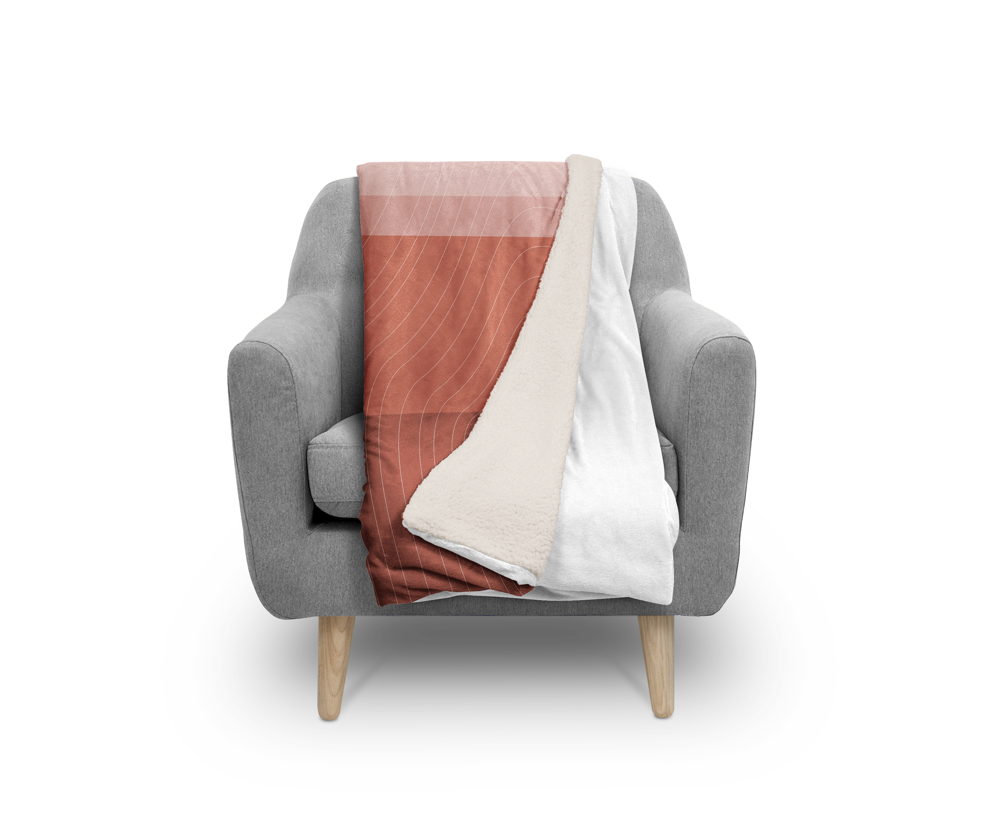

As an Oregonian passionate about child welfare, I found the data regarding foster care in Oregon by the Office of Business Intelligence Department of the Department of Human Services to be absolutely abysmal. Although there is no good solution for children who need a stable, nurturing environment and don’t have access to it, I decided that I wanted to create something that may ease the difficulty of moving from home to home.
Background On Foster Care
“Children are the quintessential victims: helpless, delicate, and demanding.”
What We Know About The Effects of Foster Care, The Institute for Research on Poverty At the University of Wisconsin
What Is Foster Care?
Foster care is meant to be a substitute for parental care, however nobody considers it to be a successful solution. The assumption that these homes are temporary is one of the main issues that the current foster care system poses.
The foster care system’s primary goal is to produce functional adults, rather than trying to foster an environment that helps children work through the trauma of being removed from their home and offer a safe and nurturing home.
Before Foster Care
Before the Middle Ages, infanticide and abandonment were far more common and accepted practices. Children who were old enough to work became indentured servants until they reached the age of majority. In Tudor, England, children reached the age of majority at nine years old.
In 1853, Charles Loring Brace created the ‘Placing Out System’. He rounded up ‘vagrants’ from the streets and institutions, and sent them to rural towns in the West and the South to work. The process has been described as similar to a slave auction. Between 1854 and 1929, at least 100,000 children are estimated to have been taken from NYC alone.
In 1853, Charles Loring Brace created the ‘Placing Out System’. He rounded up ‘vagrants’ from the streets and institutions, and sent them to rural towns in the West and the South to work. The process has been described as similar to a slave auction. Between 1854 and 1929, at least 100,000 children are estimated to have been taken from NYC alone.
Concerns with Foster Care
The foster care system is controversial because it keeps children in what are meant to be temporary situations, and oftentimes prevent children from returning to their families. The system has also been known to deliberately move children who are becoming attached to their foster families in order to maintain the idea that the system is meant to be temporary.
Children who enter the foster care system are faced with an entire upheaval of their lives. They have to adjust not only to a different family, home, and school, but to new peers and an entirely new culture and customs.
Children who enter the foster care system are faced with an entire upheaval of their lives. They have to adjust not only to a different family, home, and school, but to new peers and an entirely new culture and customs.
The Data
Incidents & Fatalities
In 2016, Oregon’s foster care system addressed
- 1,045 cases of sexual abuse (25.8% higher than in 2015)
- 1,217 cases of physical abuse (20.7% higher than in 2015)
- 6,524 credible threats of harm (19.9% higher than in 2015)
- 6,590 cases of neglect (10.8% higher than in 2015)
- 248 cases of mental injury (3.3% higher than in 2015)
The Oregon State 2016 Child Welfare Data Book
The Idea
How do we create something practical, meaningful, and beautiful out of the data provided by the Oregon State Foster Care System?
The Inspiration
Create something that promotes creative thinking and provides comfort for children throughout their time in the foster care system. I was inspired by the idea that blanket forts, something most children build, provide a sense of security and a space for creativity. I created a developed a pattern based on the above data, created four different color schemes, and put this pattern on four cushions and a blanket.
The Cushions & Blankets
Each cushion is sized proportionally and colored accordingly to the data representing each type and the quantity of incidents which occured in 2016. The two largest cushions fit together to create a twin-sized mattress which can comfortably sleep a child until they are 11 years old. The smaller cushions can be used as pillows when the cushion are being used as a bed. Each side of every cushion has a velcro flap that allows the cushions to connect, and can be assembled into a bed, a seat, or, of course, a blanket fort.
The blankets have the designed pattern on one side, and white on the other side. The blanket’s patterned side is made of water-resistant canvas, and a thick, soft plush is on the white side.
The blankets have the designed pattern on one side, and white on the other side. The blanket’s patterned side is made of water-resistant canvas, and a thick, soft plush is on the white side.


Why This Project?
This project was one of the saddest projects I’ve ever worked on. To know that Oregon continues to fail the children who have already been harmed or forgotten by their communities are then forced into a system which is not only incredibly difficult to get out of but treats children sometimes just as badly as they were being treated at home is absolutely heartbreaking.
One of the most common questions I’ve gotten regarding this project has been, “why did you decide to put upsetting data about children on things that you’re giving to children?” My response to this is that I believe that the children who suffer within the foster care system are forgotten by many, even the people who have taken on the impossible task of being directly responsible for these children. I wanted this data to not only be remembered and brought to the forefront of our thought, but also be used to create something helpful for the new children entering the foster care system. As a society, we have yet to develop a system that cares for our children the way they should be cared for. until that happens, giving children something portable that can provide comfort in a practical and fun way is, for me, doing something that helps these forgotten children.